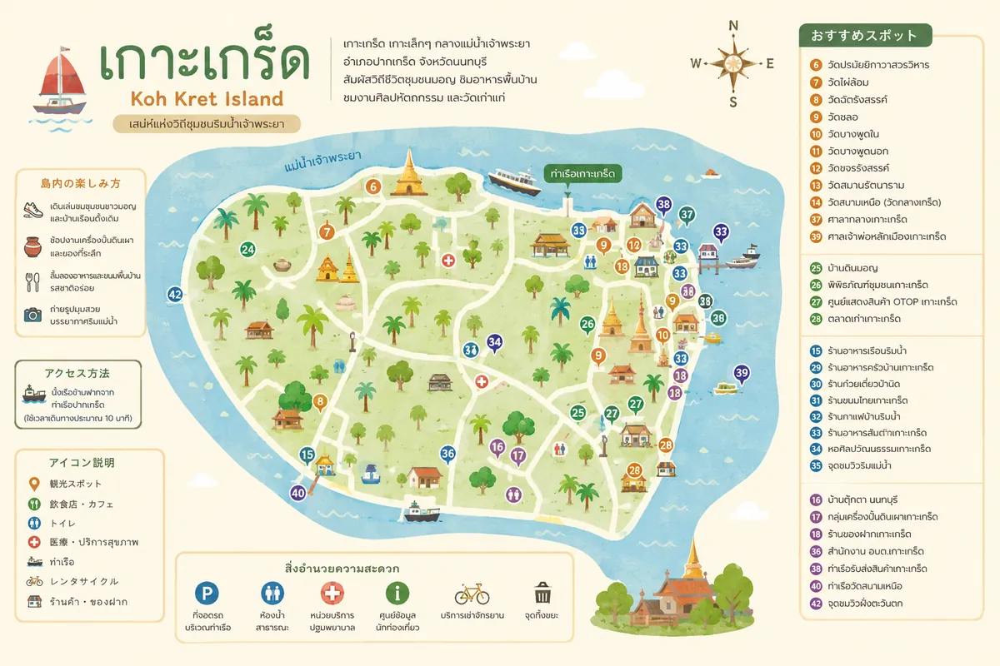

แพลนเที่ยว
ครึ่งวันก็เอาอยู่
สำหรับคนที่ตื่นสายแล้วยังอยากออกไปไหนสักที่ แพลนนี้เริ่มบ่ายและจบก่อนค่ำ เดินเป็นวงเดียวไม่ต้องย้อนทาง
สรุปให้ก่อน
- งบต่อคน
- หลักร้อยต้น ๆรวมค่าเรือ ของกิน และกาแฟหนึ่งแก้ว
- ใช้เวลา
- ราว 4–5 ชั่วโมงเริ่มบ่ายต้น จบก่อนเรือเที่ยวสุดท้าย
- เหมาะกับ
- คนตื่นสาย ไปกันสองถึงสี่คนเดินเยอะ ใส่รองเท้าสบาย
- เริ่มที่
- ท่าเรือฝั่งปากเกร็ดข้ามเรือแล้วเริ่มเดินได้เลย
ข้อดีของเกาะเกร็ดคือมันเล็กพอที่จะเดินจบได้ในครึ่งวัน แต่ต้องเรียงลำดับให้ถูก ไม่งั้นจะเดินย้อนไปมาจนหมดแรงก่อนถึงจุดที่อยากไปจริง ๆ
ลำดับที่แนะนำ
- บ่ายต้น — ข้ามเรือ เข้าวัดปรมัยยิกาวาสที่อยู่ติดท่าเรือ ใช้เวลาราวครึ่งชั่วโมง
- บ่ายกลาง — เดินริมน้ำต่อไปที่เจดีย์เอียงมุเตา ถ่ายรูป แล้วเดินต่อเข้าหมู่บ้านกวานอาม่าน
- บ่ายแก่ — แวะคาเฟ่ริมน้ำ พักขาและรอให้แดดอ่อนลง
- เย็น — ปิดท้ายที่ตลาดริมน้ำ ซื้อของกินและของฝากแล้วเดินกลับไปขึ้นเรือ
ที่ให้ตลาดอยู่ท้ายสุด เพราะของฝากหนักและของกินร้อน ไม่ควรถือเดินทั้งวัน และตลาดอยู่ใกล้ท่าเรืออยู่แล้ว

ต้องเผื่ออะไรบ้าง
- เงินสดแบงก์ย่อย ร้านเล็กหลายร้านไม่รับโอน
- ร่มหรือหมวก เพราะทางเดินริมน้ำหลายช่วงไม่มีร่มเงา
- เวลาเรือเที่ยวสุดท้าย เช็กตั้งแต่ตอนข้ามมา
ถ้าไปวันธรรมดา ให้สลับลำดับ
วันธรรมดาบางร้านในตลาดปิด ให้เอาตลาดขึ้นมาไว้กลางแพลนแทน แล้วปิดท้ายที่คาเฟ่ ซึ่งเปิดแน่นอนกว่า
ข้อมูลชุดนี้ยังเป็นตัวอย่าง ราคาและเวลาต้องไปเช็กของจริงที่เกาะเกร็ดก่อนเผยแพร่